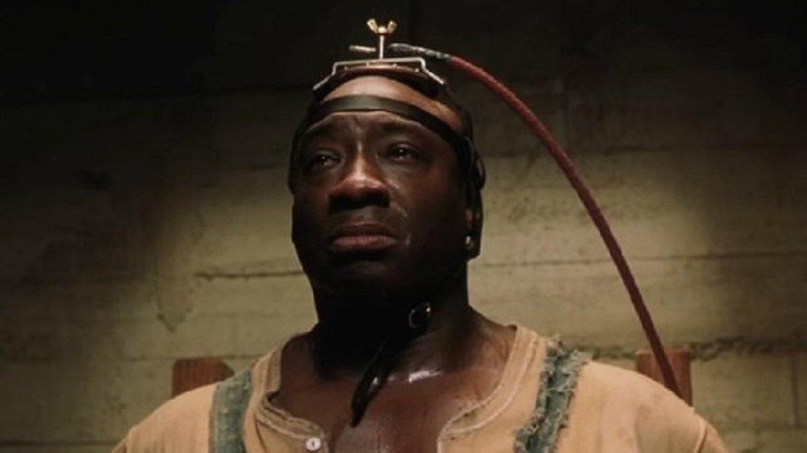

filmin özeti
|  |
Yönetmen Frank DarabontSenarist Frank Darabont, Stephen KingOyuncular: Tom Hanks, Michael Clarke Duncan, David MorseOrijinal adı The Green MileYeşil Yol, bir hapishane görevlisi ile bir mahkumun öyküsünü anlatıyor. Paul Edgecomb'un hapishanedeki görevi, idama mahkum edilen mahkumları son yolculuklarına uğurlamaktır. Çalıştığı yıllar içerisinde yüzlerce mahkumu idam etmiştir. Bir gün John Coffey isimli korkutucu görünümlü bir adamla tanışır. Ancak Coffey'in bu ürkütücü görünümünün altında oldukça saf bir ruh yatmaktadır. Coffey, iki küçük kız çocuğunun katil davasında yargılanmaktadır. Coffey'in günden güne gün yüzüne çıkan dünya ötesi güçleri, karakteri hakkında yeni ipuçlarını anbean ortaya çıkaracaktır. |